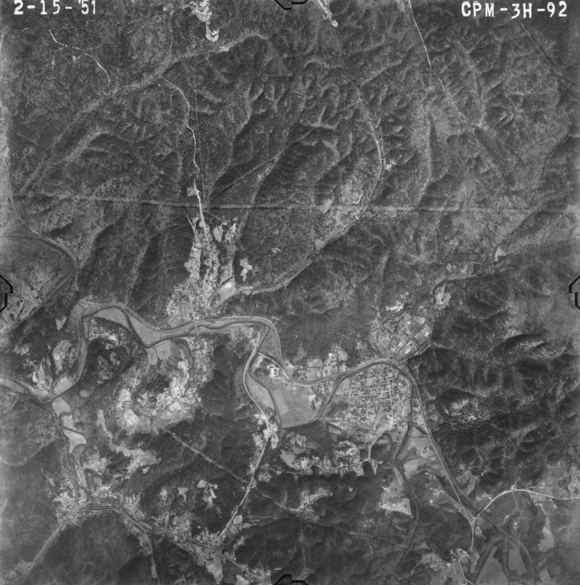

Daily conditions
Check the weather and local rhythms.
Open the almanac for live weather, creek conditions, moon phase, fishing notes, and the local seasonal read.
Open the almanac →This site is a front porch for the record. It gathers history, land, local knowledge, and the civic questions shaping Cardiff now. Begin with the weather, the news, or the pages that help explain the place.

Open the almanac for live weather, creek conditions, moon phase, fishing notes, and the local seasonal read.
Open the almanac →Nearby towns, county decisions, weather, roads, schools, and public safety all shape daily life in Cardiff.
Open the news page →The history matters. So do the land, the creek, the old roads, the cemetery, and the record left behind. The better people understand the place, the better they can move through the present.
Open the field guide →Cardiff is small, but the choices in front of it are real. The Civic Pathway explains what dormancy means, what it takes to restart local government, and how residents can think through next steps.
Open the civic pathway →Use the Field Guide to connect the built town to the landscape around it.
Go to field guide →The cemetery page gives the town a longer frame and keeps memory attached to place.
Go to cemetery →Terrain tells its own story. This section helps visitors understand the ridges, cuts, and movement through the area.
Go to hills & hollers →The involvement page stays concrete: serve, share, document, help, or simply stay informed.
Go to get involved →Holidays, workdays, meetings, and community dates now have a home of their own instead of getting scattered across the site.
Open the calendar →Hello, my name is Joe.
I created this site as an attempt to share information about Cardiff. Somewhere along the way, it turned into a labor of love.
I have lived in Cardiff since 2009, in the house I inherited from my grandparents. My grandfather and his father before him both served as mayor of this town. I grew up here learning the woods and the creek from people who knew every inch of this place. Cardiff is in my bones.
I served on the town council until we lost our quorum and could no longer seat a new mayor. Because of timing and circumstances, our town government became dormant. I hope this site can help answer questions people have about what happened and what our next steps forward look like. If any of that is new to you, please take a few minutes with the Civic Pathway section. Our future depends on people understanding where things stand.
I am not here to represent any political party or agenda. I believe in doing what is right no matter the cost.
This is an independent community website I built on my own time and at my own expense. It is not the official municipal website for the Town of Cardiff, and anything raised through this project supports the development and upkeep of the site itself.
I feel like there are enough people around here who care, otherwise I would not have taken the time to build this. I do not want the place I live and love to turn into the last garbage dump on the left.
A quick note on how this site was built: I made it with the help of AI tools. If you have strong feelings about that, I understand, but I hope you will judge the site by what is in it.
Please use the features here and contribute what you can. I will be making regular updates, and I am always open to ideas.
These stories pull from live area coverage and favor nearby, recent, practical reporting over filler. Use the full news page for more filters and more stories.
Story selection favors fresh reporting from Birmingham and Jefferson County outlets, plus nearby-place matches when Cardiff itself is not named in the headline.